Blogitekstit · Syyskuu 2020
Päivä 5 ja 6 - "Tässä nyt on pari muuttujaa" - kotia kohti

Jussi Vatasen roolihahmolla Napapiirin Sankarit elokuvissa on ollut mukana aina pari muuttujaa. Niin oli meilläkin paluumatkalla kotiin.
Aamu alkoi mökin kuntoonlaitolla. Vedet pois saunasta, hylsyt pussiin ja roskat nippuun. Kymmeneltä irtosi vene laiturista ja kerkesimme kaiken touhuamisen välissä juomaan isäni keittämät nokipannukahvitkin.

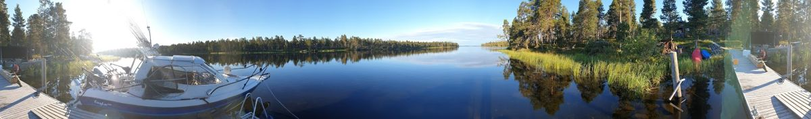
Jääsaarensalmesta koitimme vielä vertikaalijigata harmaanieriää, kalakaikuja piirtyi Hummingbird Solix 10 näytölle, mutta jigimme eivät kaloille kelvanneet. Mitä lie olleet?
Kamat veneestä autoon, kiitoksen Jarkolle ja suunta kohti Simojokea. Joella tulisimme tapaamaan Juhan ystävän ja viehevalmistaja Arin. Maailma kun on pieni, tunsi nimittäin Jarkkokin Arin ja on ollut hänellä jopa kesätöissä.
Lisää legendoja kaverilistalle

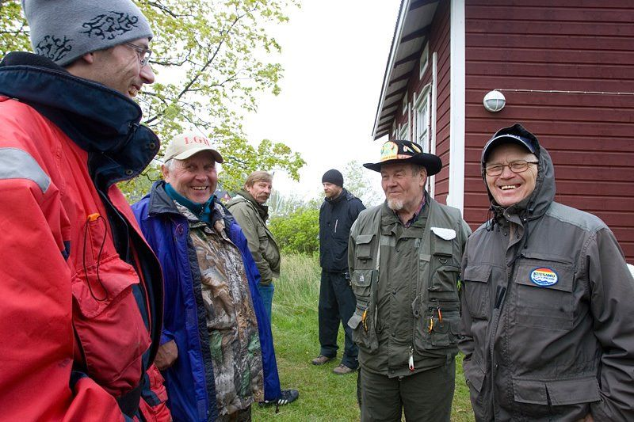
Minulla on ilo ollut tuntea ja tutustua moniin Suomen kovimpiin vieheiden valmistajiin. Kalamaratonissa toimin Titaanit joukkueelle huoltajana sekä paikallisoppaana, tuohon tiimiin kuului Paavo Korpua, Esko Rapala ja Kalevi Kangas.
Nuoremmasta polvesta Vajokki -vieheitä valmistavan Esko Vuoren. Kalapelen Pekka Leinoon sekä Jouni Väänäiseen olen tutustunut Turun ja Joensuun Kalamaratoneissa.
Nyt tähän upeaan joukkoon saan kunnian lisätä Kojalo Äijän, eli Juha Oravan sekä Tiura - uistinten uistinseppä Ari Yliollitervon.
"Kojamo Äijä on kotimainen viehevalmistaja joka on erikoistunut “jalokala” vieheisiin.
Tuotteitamme mm. Huopana Fly, Salmon uistimet, hopeiset ja kultaiset lusikkauistimet."

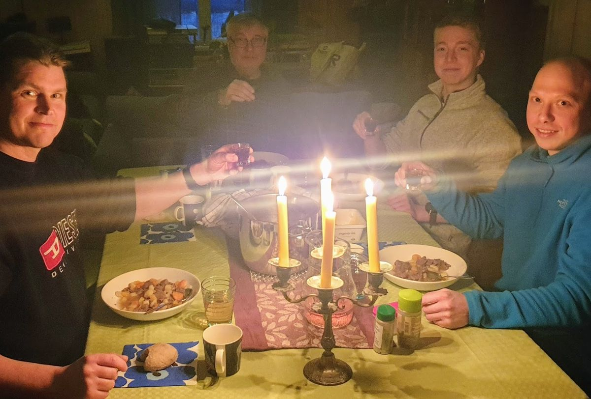
Juhaan tutustuin Riihimäen Erämessuilla vuonna 2018 kun olimme Hong Kong -tavaratalon kanssa osastolla messuilla. Rekrysin tuolloin Klubilaisia ja Juha jäi juttelemaan aiheesta, nopeasti kävi ilmi Longinoja- ja kalastusinnostukseni ja loppu onkin historiaa.
On hienoa tavata ihminen, josta Juha on kertonut paljon upeita tarinoita. Tarina, jonka kuulen usein heidän retkistään, kertoo Ivalon historian ensimmäisistä ja samalla viimeisistä erämessuista.
"Oltiin Arin kanssa ikimuistoisella Inarin erämessuilla. Matkasimme Arin 96 Saabilla, huippunopeus 50 km/h ja Saariselällä mittari nousi alamäessä jopa 60 km/h kohdalle, tämä johtui perässä tulevasta asuntovaunusta.
Erämessujen suosio yllätti meidät, siellä oli ehkä kymmenen näytteille asentajaa ja yleisöä ainakin sata.
Siinä rupesi pari paikallista helvetin kovaa kalamiestä pyörimään osastolla ja alkoivat ehdottelemaan, jos mentäisiin, vetelee uistinta illaksi. Sovittiin treffit paikallisen leirintäalueen laiturille ja lähdettiin Inarinjärvelle.
Ajettiin sitten pelipaikoille, pojat olivat hirveen ystävällisiä. Niillä oli Scandikin 580 perähytillinen vene, oli plaanareita ja takiloita etukannelle. Meille ne antoivat sen peräluukun ongittavaksi.
Arin kanssa siinä vedettiin pitkää tikkua, että kumpi ensiksi aloittaa. En musita kumpi aloitti. Oli sovitu, että kun kala tulee, vaihdetaan toisen vehkeet.
Siinä vaiheessa, kun olli vuorotellen muutama kala saatu. Alkoivat kaverit ihmettelemään, miksi te noita uistimia vaihdatte.
Jompikumpi meistä totes: Kaikilla tulee, ei sillä oikeestaan niin ole väliä.
Siinä vaiheessa, kun meillä oli kuusi kalaa veneessä ja poikien Rapalat ei ollut saanut yhtään.
Pojat totesivat, että nyt on kiire kotiin.
Vehkeet ylös ja rantaan niin kovaa kuin vene kulkee."
Näistä messuista juontaa juurensa myös Juhan ja Arin ystävyys reilun kolmenkymmenen vuoden taakse 80-luvun loppupuolella Riihimäen Erämessuilla ystävystyneet kaverit. Ovat siitä asti kalastelleet yhdessä ja Ari on myös Juhan lapsen kummi.

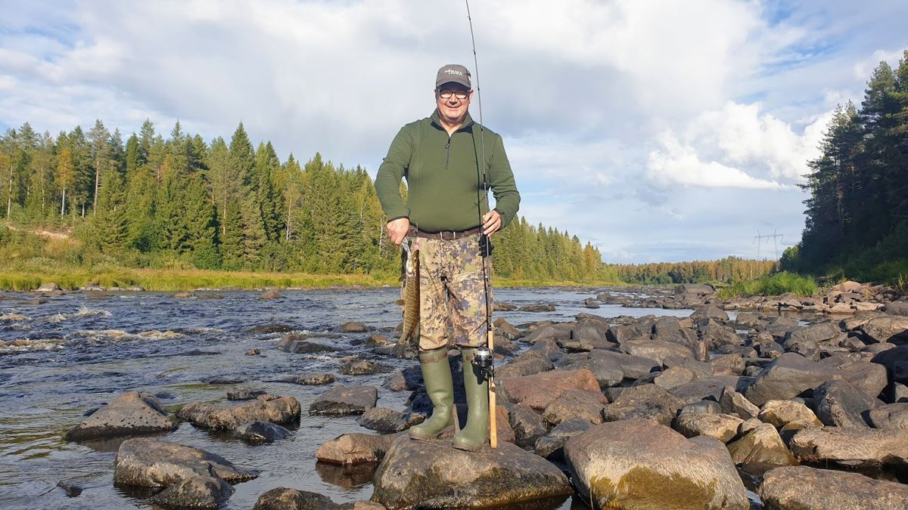
Ari laittoi siiman päähän Neiden -lusikan, kosken välisestä suvannosta heti ensimmäisellä heitolla nappasi hauki joka pääsi harventamaan särkikalakantoja koukusta irrottamisen jälkeen.
"Juhan paras asia on ehdottomasti lojaalisuus." -Ari
Frans Wilhelm Tiura oli Peter Käänteisen kisällipoika, joka oli kiinnostunut toden teolla uistimien teosta. Tuolloin 1800-luvulla taottiin osa Suomalaista viehevalmistushistoriaa, joka jatkuu vielä nykypäivinä.

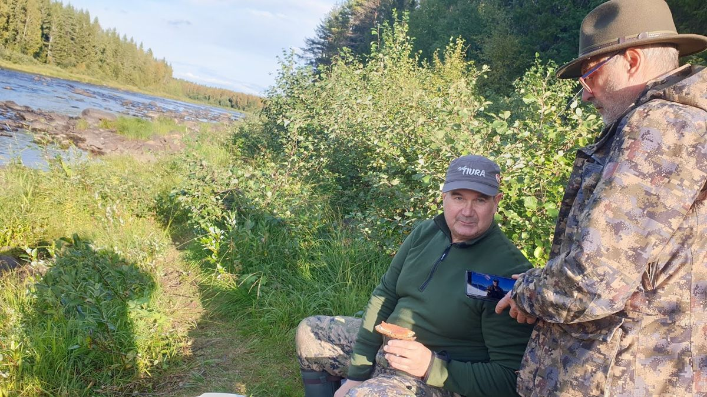
”Tiura-uistimia on valmistettu käsityönä vuodesta 1881 Suomessa. Yrityksemme on vanhin Suomessa yhtäjaksoisesti toiminut kalastusvälineiden valmistaja ja vanhimpia koko maailmassa.”
Arille rakkainta viehettä kysyessäni hän mietti vastausta hieman ja lopulta kertoi sen olevan Iso Tiura. Uistimen kehitystarina ja historian kuuleminen Simojoen rannalla itse kehittäjältä oli hieno kokemus ja avarsi ymmärtämään sitä upeaa käsityöperinnettä mitä suomalainen vieheiden kehittäminen parhaimmillaan on ollut ja on nykyään.
”Iso Tiura on ehkä se kaikista rakkain, se soveltuu nopeaan tai hitaaseen vetoon, taimenelle ja lohelle. Se vaan pyytää niin tehokkaasti. Kehitys kesti varmaan sen viisi vuotta, protoja ja useita versioita.” -Ari
Harvoin Juha on vähäsanainen, mutta nyt ei paljoa tarvinnut omaa suosikkia miettiä eikä perusteluja.
”Pullukka vaappu ja lyhyesti: Sillä tulee kalaa.” - Juha
Kerroin Arille, että toutaimen kalastuksessa tarvitaan lusikka, joka kestää kovaa kelausnopeutta ja ui myös kovemmassa virrassa. Yllätyksekseni sain useamman eri värisen Neiden -lusikan omaan pakkiini suoraan Arin pakista.

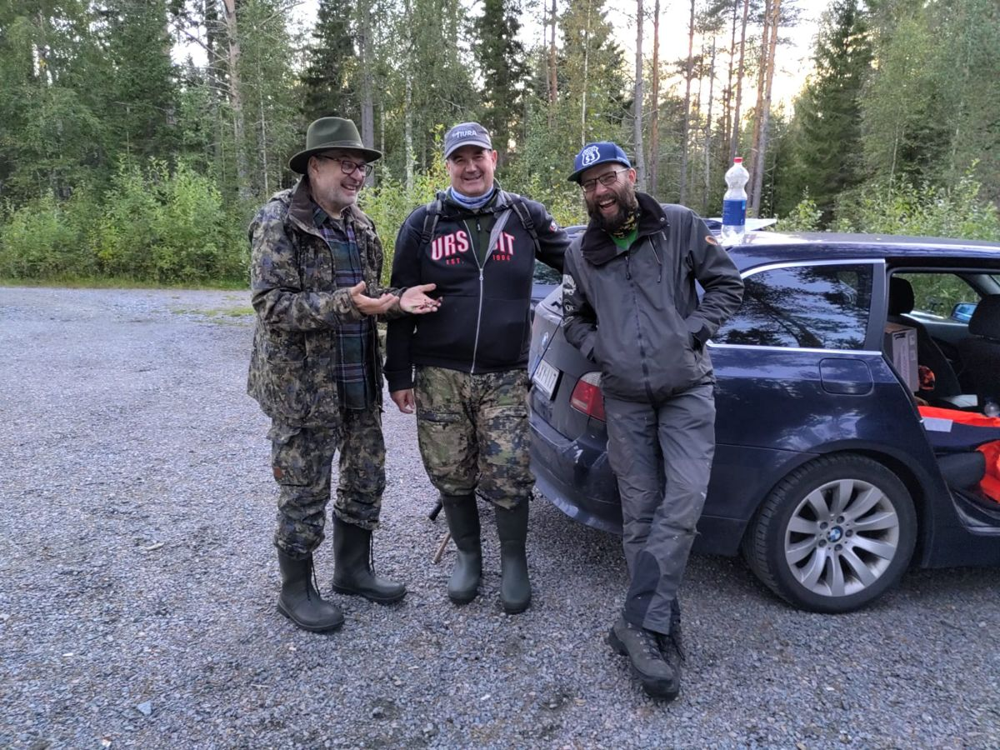
Ari pyysi isääni vielä ottamaan kuvan missä minä olin keskellä kahden viehevalmistuslegendan vieressä.
Kotia kohti - yö Oulussa

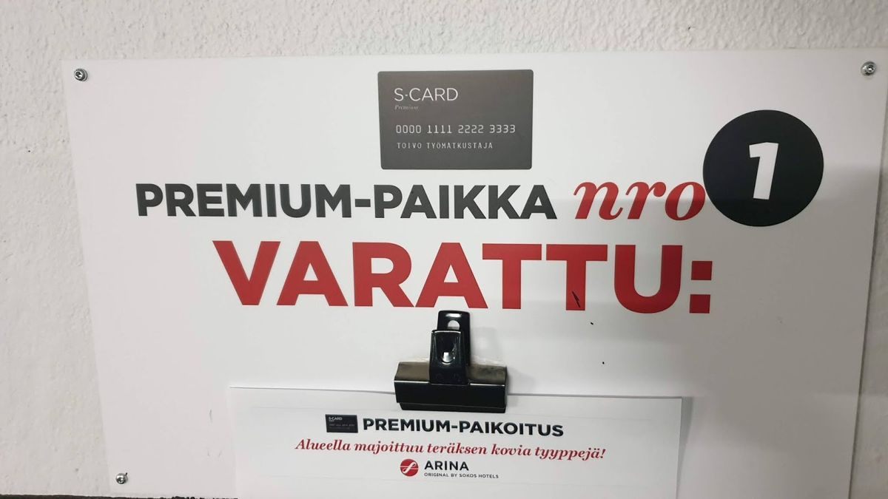
Saavuimme illalla hotellille, ja parkkeerasimme auton halliin Juhalle varattuun ruutuun. Olin alustavasti sopinut kalakaverini Laurin tapaamisen Merikoskella. Lauri oli heittämässä lohta ja olisi ollut kiva mennä moikkaamaan, valitettavasti siirtymäpätkä oli verottanut voimia että tämä suunnitelma piti kuopata.
Kävimme Juhan kanssa vielä iltapalalla Amarillossa. "Pieni" hampurilainen kera huikean asiakaspalvelun ja asiointikokemuksen jälkeen kömmimme huoneisiimme nukkumaan. Isäni oli jäänyt jo aikaisemmin nukkumaan huoneeseen.

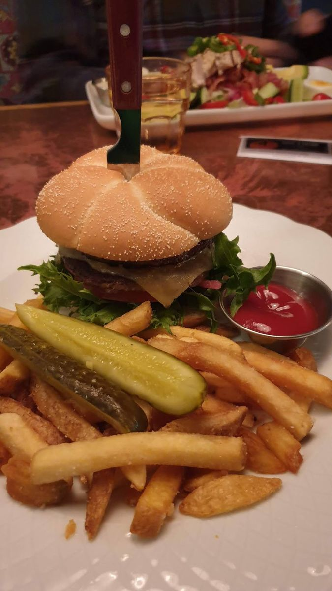
Aamun ruokailut jatkuivat siitä mihin illalla jäi. Hotelliaamiainen, paistettua pekonia, hyvää tuoretta leipää, vihanneksia ja hedelmiä.
Kun puhutaan asiakaspalvelusta, oli se ensiluokkaista Oulun Sokos hotel Arinassa. Palvelu oli ensiluokkaista kaikin osin, sijainti on loistava ja aamupala oli huikea.
Viimeiset muuttujat

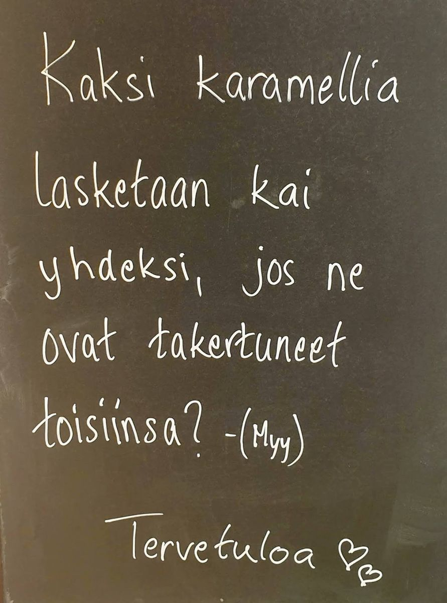
Aamulla tuskanhiki nousi pintaan, kun auton avaimia ei löytynyt mistään. Tutkimme huoneen, aulahenkilökunta auttoi etsinnässä, mutta avaimia ei löytynyt. Juha soitti muutaman Oulun tutun läpi, mutta laina-autoa ei löytynyt. Lopputulos oli, että taksi alle ja kohti autovuokraamoa. Limingantullin Europcarista löytyi lopulta alle Nissan Qashqain menopeliksi.
Kamat jäivät Ouluun, onneksi kalastusvälineissä ei ole sellaisia mitä nyt akuutisti tarvitsisi lajijahtiin eikä isänikään laukussa mitään olennaista ollut. Omalla kohdalla lasten tuliaiset odotuttavat.
Matkalla Jyväskylään katselin autoja netistä ja varasin Sakan liikkeestä koeajon seitsemän paikkaisella Skoda Kodiaqilla. Tilan tarve tulisi kasvamaan lähipäivinä, joten myös auton penkkimäärää piti kasvattaa.
Lopputulos on varmasti vaikea arvata, auto meni vaihtoon ei tosin koeajettuun malliin vaan toisen liikkeen vähemmän ajettuun ja paremmin varusteltuun malliin. Kiitos Saka Jyväskylän liikkeen Eliakselle mahtavasta palvelusta.

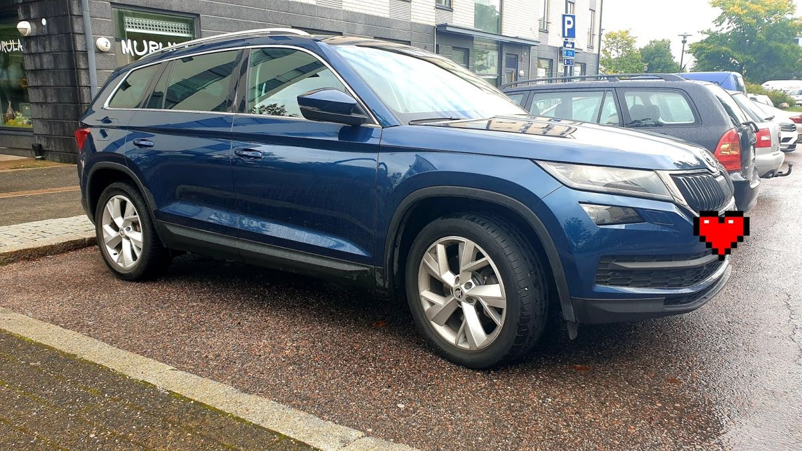
Autonhankintaprosessi alkoi chat-ikkunan välityksellä, jatkui tekstarein ja päättyi kasvotusten tehtyihin kauppoihin.
Rentouttava ja mielen työasioista tyhjentänyt loma toteutui juuri niin kuin olin suunnitellut. Vähintään kaksi kalalajia, mukavaa ja rentoa oleilua ja se tärkein. Isäni nautti.
Minnehän sitä ensi vuonna suunnistetaan ja olisikohan sillä reissulla vähemmän muuttujia?

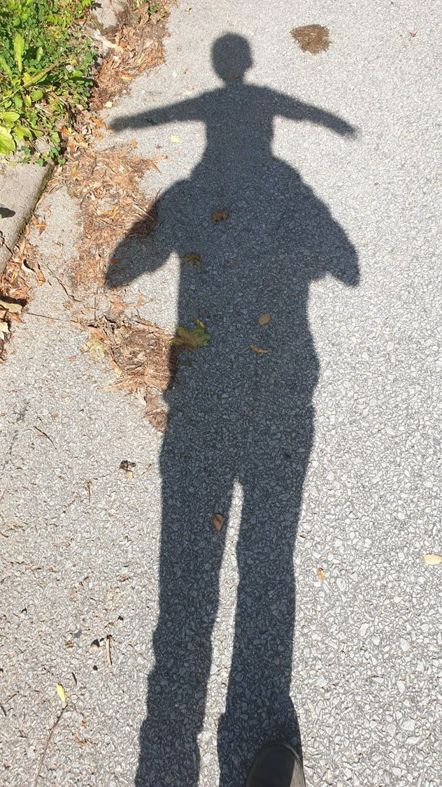
Lopulta vajaa viikko meni, että saimme matkatavaramme. Ari toi ne samalla kertaa stadiin kuin tyttärensä muuttokuorman.